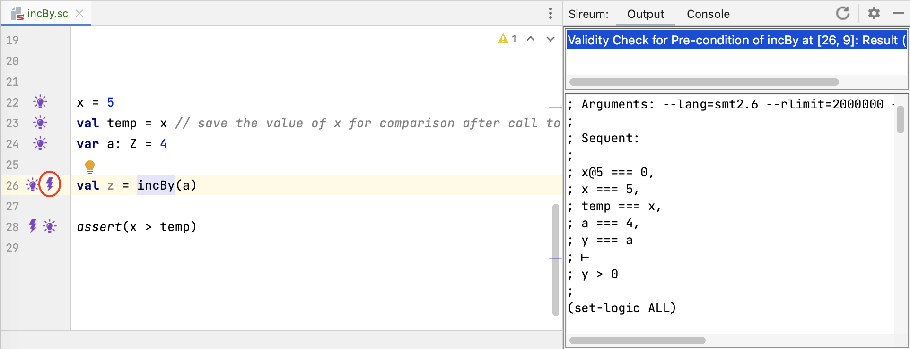
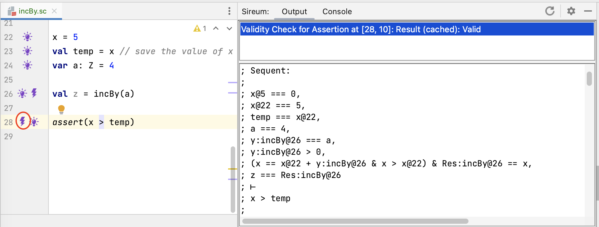
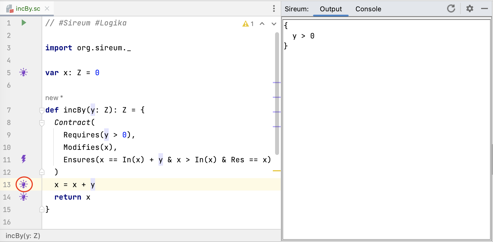
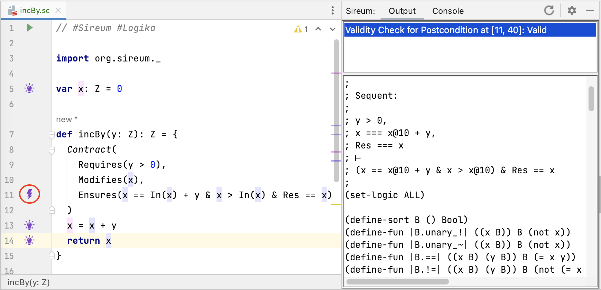
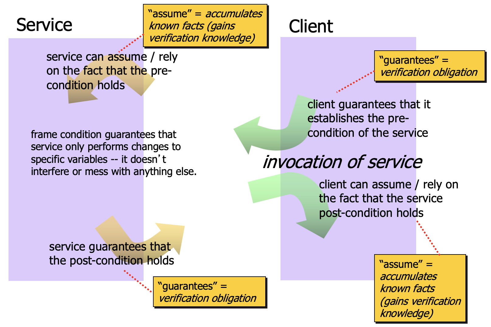

Contract Reasoning
var x: Z = 0
def incBy(y: Z): Z = {
Contract(
Requires(y > 0), // pre-condition
Modifies(x), // frame-condition
Ensures(x == In(x) + y & x > In(x) & Res == x) // post-condition
)
x = x + y
return x
}
In this example (contrived for the purpose of illustration),
a “global” variable x is defined, and an incBy method is
defined to increment x by the value supplied via parameter y.
As a conveniece the method returns the value of x after the
increment.
The method has a contract made up of several parts:
- a pre-condition stated using the
Requireskeyword that indicates properties that must hold when the method is called. In this case, the method should always be called with the parameteryhaving a value greater than0. The Logika verifier will automatically check that all calls to the method fulfill this property. - a post-condition stated using the
Ensureskeyword indicates properties that must hold when the the method completes and control returns to the caller. In this case, the method should ensure that the value ofxin the post-state is equal to the value ofxin the pre-state plus the value ofy. Slang provides theInnotation to enable expressions in the post-condition and other proof contexts to reference the value ofxin the pre-state (Inis not used in the pre-condition because pre-condition expressions are always/only interpreted in terms of the pre-state). The method should also ensure that the resulting value of the method is equal to the value ofxin the post-state. Slang provides theResnotation to refer to method’s return value. The Logika verifier will automatically check that the method implementation fulfills this property (guaranteeing that all possible calls/executions of the method that satisfy the pre-condition will lead to the post-condition being satisfied). - a frame condition stated using the
Modifieskeyword indicates the variables visible “outside” of the method (e.g., “global” variables) that may be modified due to the method’s execution (it implicitly indicates that the method must not modify any other variables outside the method). This is useful for clients of the method to know because if they were depending on properties of variables listed in the modifies clause, the clause indicates that those properties may be invalidated due to changes in the variables. Contract elements likemodifies(different names/keywords are used in different contract languages) have historically been called frame conditions because they “frame” the state of the program that (a) the method may change and (b) the method must not change.
Assume / Guarantee Reasoning
In general, method contracts capture properties that client code (code that calls the method) should understand to be able to invoke the method correctly and to correctly rely on its results.
Client Perspective
The following illustrates a call by a client of the incBy
“service”. Comments have been added to code to indicate the
verification obligations that met before calling the service as well
as the knowledge that the client can rely on after the call (note: we use the special symbol x_old after the call to incBy to refer to the value of x before the call):
var a : Z = 4
// V-OBLG: client must guarantee pre-condition is satisfied
// pre-condition interpreted in calling context:
// a > 0
val z = incBy(a)
// V-KNOW: client gets to assume that post-condition is satisfied
// post-condition interpreted in calling context:
// x == x_old + a
// x > x_old
// z == x
// V-KNOW: client gets to assume that no variable in its context
// other than x is changed. In particular, a has not changed,
// so any knowledge of a before the call is still valid after the
// call.
Before the call, the client must guarantee that the pre-condition is
satisfied. The method’s precondition y > 0 is stated in terms of its formal
parameter y. For some intuition about how the precondition applies to the
calling context, we can view the formal parameter y to be instantiated with the
actual parameter a in the contract precondition to obtain the verification obligation a > 0 that must be met in the calling context immediately before the call.

Logika marks this verification obligation with a bolt at the call site at Line 26 as shown in the figure above. The verification obligation sequent shown in the right pane indicates that the Logika process is actually a bit less direct than the intuition presented above.
; x@5 === 0, // initialization of x
; x === 5, // assignment to x
; temp === x, // assignment to temp
; a === 4, // assignment to a
; y === a // bind caller's actual parameter a to formal parameter y of called method
; ⊢
; y > 0 // check that pre-condition of called procedure is satisfied
In particular, as illustrated in the comments in the sequent above, the sequent antecedents include known facts resulting from assignment statements. The effect of a substitution of the actual parameter for the formal parameter described in the “intuition” above is realized as an equality constraint between the formal parameter y and the actual parameter a. Given this equality constraint, the constraint y > 0 to be verified is equivalent to a > 0.
After the call, the client gains knowledge based on what the service
stated it would achieve in the post-condition. incBy has three
clauses in its post-condition:
x == In(x) + yx > In(x)Res == x
Clicking on the light bulb for the assertion at Line 28 reveals known facts that include constraints from the called methods contract (excerpts are shown below). Note that the identifiers for logic variables generated from the message contract are prefixed by “incBy. ..”.
...
At[Z]("incBy.y", 0) == a; // binding of formal parameter ``y`` to actual parameter ``a``
At[Z]("incBy.y", 0) > 0; // pre-condition
x == At(x, 1) + At[Z]("incBy.y", 0) & x > At(x, 1) &
At[Z]("incBy.Res", 0) == x; // post-condition
z == At[Z]("incBy.Res", 0) // binding of return value to context variable ``z`` receiving
// result of called method
These facts, resulting from called method’s contract, gives knowledge that the client can rely on after the call.

As shown in the bolt information for the assertion at Line 28 in the figure above, this is sufficient information to verify that the updated value of x is greater than the value of x before the call (as reflected by the value of temp).
Service Perspective
We repeat the method code above, adding comments to indicate the reasoning principles for the Assume/Guarantee paradigm from the service’s perspective::
var x: Z = 0
def incBy(y: Z): Z = {
Contract(
Requires(y > 0),
Modifies(x),
Ensures(x == In(x) + y & x > In(x) & Res == x)
)
// V-KNOW: Service gets to assume pre-condition is satisfied
// y > 0
x = x + y
// V-OBLG: Service must guarantee only non-local variable modified is x
// V-OBLG: Service must guarantee post-condition
// x == In(x) + y
// x > In(x)
// x == x (substituting x for Res in the post-condition)
return x
}
At the beginning of the method body, because all calls of the
method will be checked by Logika to ensure that the pre-condition is
satisfied, the service gets to assume (i.e., has the knowledge)
that y > 0. Corresponding to the idea of “getting to assume”, within the Logika verification process, the presence of the pre-condition Requires(y > 0) causes y > 0 to be added to the set of known facts at the beginning of the method body.

In the figure above, the developer has clicked on the lightbulb at the first line in the method (Line 13), and y > 0 appears in the known facts.
At the end of the method body, the implementer of
the service must guarantee that the post-condition has been met.
In the third clause of the post-condition, the Res keyword stands
for the result of the method. From the implementor’s perspective,
Res is computed by the expression used in the return
statement, in this case by the variable x from return x.
Corresponding to the idea of “must guarantee”, within the verification process, Logika will generate a verification obligation (corresponding to the presence of the lightning bolt at Line 11).

In the figure above, the developer has clicked on the bolt at the contract post-condition, the the Logika output panel shows the sequent that needs to be proven. Essentially, it needs to be shown that from the known facts at the end of the method that the post-condition can be established. The listing below presents an annotated version of the sequent.
; Sequent:
;
; y > 0, // from pre-condition
; x === x@10 + y, // from method body code
; Res === x // setting the 'Res' identifier to the value of the return expression
; ⊢
; (x == x@10 + y & x > x@10) & Res == x // post-condition
Even though our example method is trivial, the sequent reflects that general structure that one sees in Logika post-condition verification obligations for all methods.
Sequent Antecedent (accumulated knowledge)
- known facts from pre-condition: the first fact corresponds to the constraint that one gets to assume from the pre-condition,
- known facts from method body code: the second fact corresponds to the knowledge that Logika accumulates when processing the method body,
- binding ‘Res’ to result expression: the final fact introduces an equality constraint between (a) the keyword ‘Res’ that the developer can use in contracts to refer to the methods return value and the (b) a logical expression corresponding to the return expression in the code (in this case, the single variable
x),
Sequent Consequent (constraint to prove)
- the post-condition clause to be proven: the expression in the current post-condition clause is presented in terms of the logical variables of the method. Note that the
In(x)expressions from the post-condition are translated to a logic variable that identifies the value ofxat the beginning of the method.
For the contract frame condition (Modifies clause), the
method implementation must also guarantee that only externally visible variables modified in the method are listed in the Modifies clause (in this case, only x is modified). Conceptually, this is a property
that is achieved throughout the method body’s execution, not just at
the end of the method. Logika will check this property holds as part of its automated verification process.

The figure above summarizes the key concepts associated with the assume/guarantee pattern, including how the called method’s (service’s) contract gives rise to verification obligation and verification knowledge for both the service and client.
TBD: Insert exercises at this point
Omitting Sections of a Method Contract
Sections of a method contract may be omitted. The following abstract
value example abs does not include a pre-condition since it does
not need to make any assumptions about its inputs (i.e., it “works”
for all possible inputs of the argument type). And, since the the
method does not modify a non-local variable, the modifies section
can be omitted::
def absValue(y: Z): Z = {
Contract(
Ensures(Res >= 0)
)
var ans: Z = 0
if (x < 0) {
ans = -y
} else {
ans = y
}
return ans
}
Omitting a pre-condition is semantically equivalent to stating that
the pre-condition is always satisfied, no matter how the method is
called. To emphasize this point, one can explicitly include a
Requires clause with a body T::
Contract(
Requires(T),
Ensures(Res >= 0)
)
A trivial Modifies clause (one with no entries) can also be
included if one wishes to make a visually explicit indication that
“nothing” is modified::
Contract(
Requires(T),
Modifies(),
Ensures(Res >= 0)
)
Post-conditions can also be omitted. This is common early on in the development process where one is prototyping and only using contracts to indicate situations where bad inputs could cause problems like run-time exceptions or where the input domain for which the method is defined is limited. For example, one might want to rule out negative inputs for a square root or factorial function without saying anything about the result::
def factorial(y : Z): Z = {
Contract(
Requires(y >= 0)
)
...
}
In such situations, the service contract is making no “promises” to clients about what the service will do. However, it is still provides valuable information by indicating that the function is only defined for non-negative values.
Using Contracts to Capture Important Properties Rather Than Full Behavior
The previous section illustrates an important point about the contract
paradigm: contracts do not always need to completely specify the
behavior of a method or system to be useful. For example, the
absValue method contract did not completely specify the functional
behavior (e.g., indicating given a negative value -v that the
corresponding positive value v would be returned). It simply
indicated that the result would be non-negative.
Eventually say more here with additional examples
Contract Cases
Sometimes contracts can be specified (and even verified) more easily when they are organized according to different cases of input – and Slang Contracts provides a special notation to support that. Reference intuition for breaking proofs into cases from the math world.
The following example illustrates a variant of the absValue
method/contract above that uses Slang’s contract cases::
def absValueCases(y: Z): Z = {
Contract(
Modifies(),
// case for negative input
Case("Negative", // optional string label
Requires(y < 0), // condition on input for this case to apply
Ensures(Res == -y) // post-condition for this case
),
// case for non-negative input
Case("Non-negative", // optional string label
Requires(y >= 0), // condition on input for this case to apply
Ensures(Res == y)) // post-condition for this case
)
var ans: Z = 0
if (x < 0) {
ans = -y
} else {
ans = y
}
return ans
}
There must be a single Modifies clause for contract cases (or the
clause can be omitted when no non-local is modified) because Logika
does not support a notion of conditional modification (this makes the
rest of the verification framework more challenging).
One or more [Robby is “one or more correct”?] Case clauses are
used, where each Case typically includes both a Requires
stating some condition on the input (the case pre-condition) and an
Ensures clause indicating the properties (the case
post-condition) that must hold in the post-state when the case
pre-condition is true.
Address the following: overlapping requires, non-exhaustive requires, ordering of cases (e.g., when overlapping), omitting requires, omitting ensures.